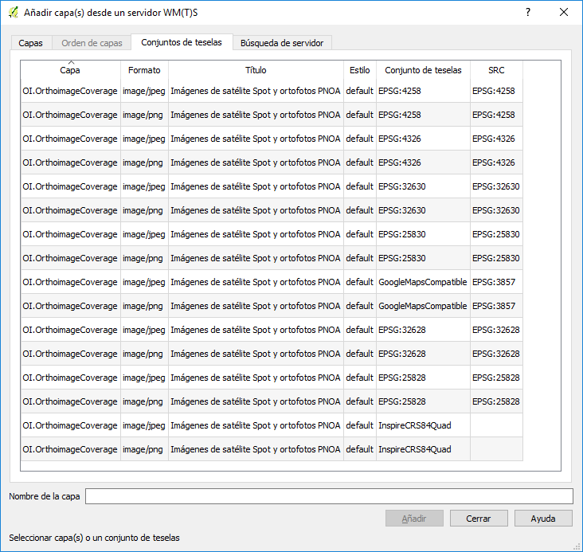
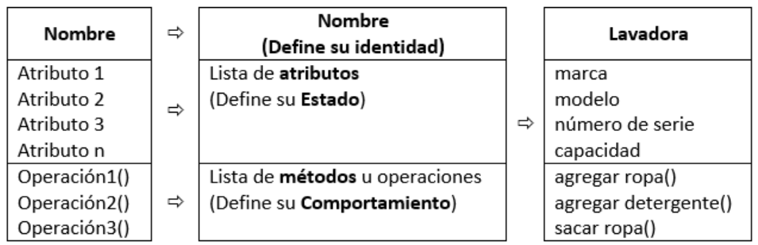

Parte I: Introduccion a Python¶
En este capítulo se facilita una introducción de conceptos y descripciones del lenguaje de programación Python a modo de recordatorio.
Recursos específicos del lenguaje de programación Python¶
La redacción de estos apuntes sobre Python está basada fundamentalmente en los recursos disponibles del tutorial “Python para todos” 1, mejorados y ampliados con otros recursos consultados de la bibliografía recomendada (2, 3, 4, 5), adaptando sus contenidos al objeto de este tutorial.
- 1
R. González Duque, Python Para Todos (2008)
- 2
G. Sherman, The PyQGIS Programmer’s Guide: Extending QGIS 3 with Python 3 (Locate Press, 2018).
- 3
P. Gerrard, Lean Python: Learn Just Enough Python to Build Useful Tools (Springer Science+Business Media, New York, NY, 2016)
- 4
G. Walters, The Python Quick Syntax Reference (Apress, California, 2014)
- 5
Mohit and B. N. Das, Learn Python in 7 Days: Get up-and-Running with Python 2017)
Para ampliar conocimientos sobre este lenguaje se recomienda los siguientes recursos disponibles en línea:
Python Software Foundation: Sitio Web oficial de Python.
Documentación oficial Python: Documentación oficial de Python Software Foundation.
Python Online Tutorial: Tutorial de Python de Python Software Foundation.
Python para todos: Incluye un completo manual en pdf y tres interesantes guías: Guía de estilo del Python, Modismos y anti-modismos en Python y Programa con un Pythonista: Python Idiomático.
A byte of Python: Se trata de un libro gratuito sobre programación utilizando el lenguaje Python que sirve como tutorial o guía del lenguaje Python para una audiencia principiante. Se puede descargar una versión en formato pdf o epub desde su página de GitHub.
Python 101!: La audiencia de este libro son principalmente personas que han programado en el pasado pero que quieren aprender Python. Esta organizado en 5 parte que abarcan desde nivel principiante a nivel intermedio.
Python Notes for Professionals book: Completo libro con más de 800 páginas descargable en formato pdf.
PyVideo.org: índice de recursos de libre disposición para aprender el lenguaje de programación Python.
Python para principiantes: Manual en castellano escrito por Eugenia Bahit
diveintopython: Tutorial de Python para programadores con experiencia recomendado en (Sherman 2014).
Programación en Python - Nivel básico Covantec: Materiales del curso de Programación en Python - Nivel básico realizado por la empresa Covantec R.L.
Materiales curso sencillo de iniciación a Python: Estos apuntes del Curso de iniciación a la programación en Python se impartieron en la segunda mitad del curso 2019/2020 en el módulo Lenguaje de Marcas y Sistemas de Gestión de la Información del ciclo formativo Administración de Sistemas Informáticos en Red (ASIR) en el IES Abastos de Valencia (España).
Caraterísticas principales de Python¶
Python es un lenguaje de programación creado por Guido van Rossum a principios de los años 90 cuyo nombre está inspirado en el grupo de cómicos ingleses “Monty Python” con una sintaxis muy limpia, que favorece un código legible. Está administrado por la Python Software Foundation y se distribuye bajo la licencia compatible con GPS denominada Python Software Foundation License. A continuación se describen sus principales características:
Interpretado o de script: Un lenguaje interpretado o de script es aquel que se ejecuta utilizando un programa intermedio llamado intérprete, que traduce el código instrucción por instrucción a medida que lo va ejecutando, en lugar de compilar el código a lenguaje máquina que pueda comprender y ejecutar directamente una computadora (lenguajes compilados). Esto proporciona ventajas como la rapidez de desarrollo e inconvenientes como una menor velocidad de ejecución. En Python, la primera vez que se ejecuta un script se compila, traduciendo el código fuente a pseudocódigo máquina intermedio llamado bytecode, generando archivos
.pyc, que son los que se ejecutarán en sucesivas ocasiones.Con tipado dinámico: No es necesario declarar el tipo de dato que va a contener una determinada variable, sino que su tipo se determinará en tiempo de ejecución según el tipo del valor al que se asigne, y el tipo de esta variable puede cambiar si se le asigna un valor de otro tipo.
Organizado y extensible: Dispone de múltiples formas de organizar código tales como funciones, clases, módulos, y paquetes. Si hay áreas que son lentas se pueden reemplazar por plugins en C o C++, siguiendo la API para extender o empotrar Python en una aplicación.
Fuertemente tipado: No se permite tratar a una variable como si fuera de un tipo distinto al que tiene, es necesario convertir de forma explícita dicha variable al nuevo tipo previamente.
Multiplataforma: El intérprete de Python está disponible en multitud de plataformas, aunque originalmente se desarrolló para Unix.
Orientado a objetos: La orientación a objetos es un paradigma de programación en el que los conceptos del mundo real relevantes para nuestro problema se trasladan a clases y objetos en nuestro programa. Esto facilita el desarrollo de programas con componentes reutilizables.
Propósito general: Se pueden crear todo tipo de programas. No es un lenguaje creado específicamente para la web o para un tipo de desarrollo concreto.
Interactivo: Dispone de un intérprete por línea de comandos en el que se pueden introducir sentencias. Cada sentencia se ejecuta y produce un resultado visible, que puede ayudarnos a entender mejor el lenguaje y probar los resultados de la ejecución de porciones de código rápidamente
Otras ventajas de este lenguaje son su sintaxis simple, clara y sencilla, el gestor de memoria, la gran cantidad de librerías disponibles y la potencia del lenguaje, entre otros, que hacen que desarrollar una aplicación en Python sea sencillo, muy rápido y, lo que es más importante, divertido.
La sintaxis de Python es tan sencilla y cercana al lenguaje natural que los programas elaborados en Python parecen pseudocódigo. Por este motivo se trata además de uno de los mejores lenguajes para aprender a programar.
Python no es adecuado sin embargo para la programación de bajo nivel o para aplicaciones en las que el rendimiento sea crítico.
Respecto a las herramientas básicas del entorno de desarrollo,
existen dos formas de ejecutar código Python: se pueden escribir líneas
de código en el intérprete y obtener una respuesta del intérprete para
cada línea (sesión interactiva) o bien se puede escribir el código de un
programa en un archivo de texto (extensión .py) y ejecutarlo. En uno y
otro caso, se utilizarán en este tutorial la consola de Python de QGIS y la
IDE PyCharm versión Community Edition.
Otro aspecto característico de Python es el concepto de indentación, característica singular de este lenguaje. La sangría no solo hace que el código de Python sea legible, sino que también distingue cada bloque de código del otro. Es muy común utilizar una indentación de 4 espacios.
Finalmente es necesario reseñar que la versión del intérprete de
Python utilizada para documentar esta sección es la distribuida por
el propio instalador de QGIS en la siguiente ruta C:/Program Files/QGIS 3.10/bin.
Para comprobar la versión de QGIS que se está utilizando:
1 2 3 | >>> import sys
>>> sys.version
'3.7.7 (default, Mar 23 2020, 23:19:08) [MSC v.1916 64 bit (AMD64)]'
|
Note
Uno de los grandes cambios del paso de versión de QGIS 2.x a 3.x es el paso de la versión de Python 2.x a 3.x. http://qgis.org/api/api_break.html
Uso de Python en GIS¶
El lenguaje Python se ha convertido en el estándar de facto para la programación en investigaciones científicas (Millman and Aivazis 2011). Lo anterior también se cumple en el contexto de las aplicaciones geomáticas, tanto en el mundo de los Sistemas de Información Geográfica (SIG) de código abierto como de software propietario, donde Python se constituye como el lenguaje de scripting estándar de facto: la mayoría de los principales software SIG proporcionan librerías de Python para la integración, análisis y automatización de tareas de geoprocesamiento, incluidos QGIS y PostGIS (Kuiper et al. 2014).
La principal ventaja de Python en relación con otros lenguajes de programación de nivel superior, como C++, es que Python presenta una mayor pendiente en su curva de aprendizaje y una sintaxis simple y clara, favoreciendo el código legible asimilable al lenguaje natural. Al venir integrado en las herramientas que lo contemplan como lenguaje de scripting, el despliegue del entorno de desarrollo es sencillo. Además, la importante comunidad de usuarios se traduce en la existencia de numerosas librerías y aplicaciones, cuya integración no sólo permite incrementar el rendimiento en la implementación del desarrollo, al evitar arrancar de cero, sino que también proporciona estabilidad, al utilizar herramientas que han sido ampliamente probadas en diferentes entornos y contextos.
Sin embargo, Python presenta inconvenientes frente a C++, principalmente que es un lenguaje interpretado o de script, que se ejecuta utilizando un programa intermedio llamado intérprete, traduciendo el código instrucción a instrucción a medida que lo va ejecutando (runtime); la compilación no ocurre antes del tiempo de ejecución. Esto se traduce en (i) una mayor dificultad en el proceso de depuración de errores al no informar fácilmente sobre éstos hasta que el código se ejecuta y, (ii) en una menor velocidad de ejecución, lo que puede ser crítico en el desarrollo de aplicaciones donde el requisito de rendimiento sea necesario, como es el caso de muchas aplicaciones geomáticas, motivado por el gran volumen de información a tratar.
Para aprovechar las ventajas de ambos lenguajes y minimizar sus problemas, se recomienda utilizar la combinación de ambos lenguajes de programación, embebiendo herramientas escritas en lenguaje C++ para ser utilizadas en aplicaciones implementadas en código Python. Esta técnica presenta la ventaja de se puede mezclar código compilado en C++ y código de Python que se compila en tiempo de ejecución.
Variables¶
Definición de variables¶
La sintaxis para definir una variable en Python es la siguiente:
<variable_name> = <expression>
Note
Python es sensible a mayúsculas y minúsculas.
Error
Python tiene variables locales y globales como la mayoría de los lenguajes, pero no tiene declaraciones explícitas de variables. Las variables aparecen al asignarles un valor y son automáticamente destruidas cuando salimos de su ámbito.
1 2 3 4 | >>> mi_variable
Traceback (most recent call last):
File "<stdin>", line 1, in <module>
NameError: name 'mi_variable' is not defined
|
>>> mi_variable = 1
>>> mi_variable
1
Por el contrario, las constantes son un tipo particula de variable cuyo valor no se pueden alterar durante la ejecución de un programa. Se declaran usualmente en módulos a parte. Cada modulo es un archivo que se importa en el archivo principal. Las constantes son escritas (por convención) en letras mayúsculas y separadas por guión bajo, en caso que sean varias palabras. Por ejemplo:
PASSWORD_DB_SERVER = "123456"
Tipos básicos de variables¶
En Python los tipos básicos de variables se dividen en:
Tipo |
Descripción |
Memoria utilizada |
Rango |
Precisión |
Ejemplo |
|---|---|---|---|---|---|
|
Numérica entera |
? bytes |
?? |
No aplica |
2 |
|
Numérica flotante |
8 bytes |
[-2308, 2308] |
15 dígitos |
3.141592 |
|
Cadena de caracteres |
? bytes |
No aplica |
No aplica |
“PyQGIS” o ‘PyQGIS’ |
|
Booleano |
1 byte |
|
No aplica |
|
|
Tipo especial |
Note
Aunque se definan de forma similar, para Python no es lo mismo un número entero, un número decimal o una cadena ya que, por ejemplo, dos números se pueden multiplicar pero dos cadenas no (curiosamente, una cadena sí que se puede multiplicar por un número).
Por tanto, las siguientes definiciones de variables no son equivalentes:
>>> fecha = 2020
>>> fecha = 2020.0
>>> fecha = "2020"
>>> fecha = [13, "noviembre", 2020]
En el primer caso la variable fecha está almacenando un número entero,
en el segundo fecha está almacenando un número decimal y en el
tercero fecha está almacenando una cadena de cuatro letras. En el
cuarto, fecha está almacenando una lista (un tipo de variable que puede
contener varios elementos ordenados). Este ejemplo demuestra también que
se puede volver a definir una variable, modificando su tipo
automáticamente.
Números¶
En Python se pueden representar números enteros, reales y complejos.
Enteros¶
En versiones anteriores se representaban mediante el tipo int (de integer, entero) o
el tipo long (largo). Actualmente no existe esta distinción, ya que no hay un límite para
el valor de los números enteros.
Reales¶
En Python se expresan mediante el tipo float. Python implementa su tipo
float a bajo nivel mediante una variable de tipo double de C, es decir,
utilizando 64 bits, luego en Python siempre se utiliza doble precisión,
y en concreto se sigue el estándar IEEE 754: 1 bit para el signo, 11
para el exponente, y 52 para la mantisa. Esto significa que los valores
que podemos representar van desde ±2,2250738585072020 x 10-308
hasta ±1,7976931348623157×10308.
Para representar un número real en Python se escribe primero la parte entera, seguido de un punto y por último la parte decimal.
>>> pi = 3.141592
Operadores aritméticos¶
Los expresiones aritméticas comprenden operando y operadores:
Descripción |
a |
Operador |
b |
r |
type(r) |
|---|---|---|---|---|---|
Suma |
2 |
|
3 |
5 |
|
2 |
3.0 |
5.0 |
|
||
Resta |
3 |
|
2 |
1 |
|
3.0 |
2.0 |
1.0 |
|
||
Multiplicación |
3 |
|
2 |
6 |
|
3 |
2.0 |
6.0 |
|
||
División de flotantes |
3 |
|
2 |
1.5 |
|
-6 |
2 |
-3 |
|
||
-6.0 |
2 |
-3.0 |
|
||
División de enteros |
9 |
|
4 |
2 |
|
Módulo (resto de una división) |
15 |
|
4 |
3 |
|
Exponente |
2 |
|
8 |
256 |
|
-4 |
3 |
-64 |
|
||
4 |
-3 |
0.015625 |
|
>>> suma = 2 + 3
>>> suma, type(suma)
(5, <class 'int'>)
>>> suma = 2 + 3.0
>>> suma, type(suma)
(5.0, <class 'float'>)
Para operaciones más complejas se puede importar al módulo math.
>>> import math
>>> radio = 2
>>> longitud_circunferencia = 2 + math.pi + radio
>>> longitud_circunferencia
7.141592653589793
Funciones de conversión entre números¶
Existen además funciones de conversión de tipo entre números:
Función |
r |
type(r) |
|---|---|---|
>>> int(1.234)
|
1 |
|
>>> int(-1.234)
|
-1 |
|
>>> float(4)
|
4.0 |
|
>>> float('4.321')
|
4.321 |
|
Cadenas de caracteres¶
Las cadenas no son más que texto encerrado entre comillas simples (‘cadena’) o dobles (“cadena”).
>>> geom_wkt = "POLYGON ((30 10, 40 40, 20 40, 10 20, 30 10))"
Su comportamiento es análogo al de una tupla tal y como se verá más adelante, lo que significa que se puede modificar su contenido una vez inicializados. Se puede acceder a cada carácter por su posición:
1 2 3 | >>> geom_wkt = "POLYGON ((30 10, 40 40, 20 40, 10 20, 30 10))"
>>> geom_wkt[0]
'P'
|
Dentro de las comillas se pueden añadir caracteres especiales
escapándolos con \\:
Escape |
Significado de la secuencia |
|---|---|
|
Suprimir un carácter |
|
Carácter de nueva línea |
|
Carácter tabulación |
|
‘ |
|
“ |
>>> levantamiento = "Nº\tX\t\tY\t\tCOD\n1\t728762.67\t4328983.25\t\"bordillo\"\n2\t728785.42\t4328998.43\t\'acera.\b\'"
>>> print(levantamiento)
Nº X Y COD
1 728762.67 4328983.25 "bordillo"
2 728785.42 4328998.43 'acera'
También es posible encerrar una cadena entre triples comillas (simples o
dobles). De esta forma se podrá escribir el texto en varias líneas, y al
imprimir la cadena, se respetarán los saltos de línea que introdujimos
sin tener que recurrir al carácter \\n, así como las comillas sin tener
que escaparlas.
>>> levantamiento = """Nº\tX\t\tY\t\tCOD
1\t728762.67\t4328983.25\t\"bordillo\"
2\t728785.42\t4328998.43\t\'acera.\b\'"""
>>> print(levantamiento)
Nº X Y COD
1 728762.67 4328983.25 "bordillo"
2 728785.42 4328998.43 'acera'
Métodos de objeto cadenas de texto¶
En este apartado se facilitan la sintaxis de distintos métodos del objeto cadena de texto, aportando una descripción y un emplo de aplicación.
S.count(sub[, start [, end]])
Devuelve el número de veces que se encuentra sub en la cadena.
1 2 3 4 | >>> geom_wkt = "POLYGON ((30 10, 40 40, 20 40, 10 20, 30 10))"
>>> lados_poligono = geom_wkt.count(",")
>>> lados_poligono
4
|
Los parámetros opcionales start y end definen una subcadena en la que buscar.
1 2 3 4 5 6 7 8 | >>> cadena_texto = "Esto es un cadena de 34 caracteres"
>>> subcadena = "a"
>>> num_caracter_a = cadena_texto.count(subcadena, 0, 33)
num_caracter_a
4
>>> num_caracter_a = cadena_texto.count(subcadena, 0, 17)
num_caracter_a
2
|
S.find(sub[, start[, end]])
Devuelve la posición en la que se encontró por primera vez sub en la cadena o -1 si no se encontró.
1 2 3 4 5 | >>> cadena_texto = "Curso de programación en QGIS con Python"
>>> cadena_texto.find("QGIS")
25
>>> cadena_texto.find("SIG")
-1
|
S.replace(old, new[, count])
Devuelve una cadena en la que se han reemplazado todas las ocurrencias de la cadena old
por la cadena new. Si se especifica el parámetro count, este indica el número máximo de ocurrencias a reemplazar.
1 2 3 4 5 | >>> coor_pto = "547387.35, 43789234.98"
>>> coor_pto_separador_csv = coor_pto.replace(",", ";")
>>> coor_pto_separador_punto_decimal = coor_pto_separador_csv.replace(".",",")
>>> coor_pto_separador_punto_decimal
'547387,35; 43789234,98'
|
Las cadenas también admiten operadores como +, que funciona realizando
una concatenación de las cadenas utilizadas como operandos y *, en la
que se repite la cadena tantas veces como lo indique el número utilizado
como segundo operando.
1 2 3 4 5 6 | >>> concatena = "con" + "ca" + "te" + "nar"
>>> concatena
'concatenar'
>>> repite = concatena * 2
>>> repite
'concatenarconcatenar'
|
Para la comparación de dos cadenas de texto se puede utilizar el operador ==:
1 2 3 4 5 6 | >>> geom_wkt_2 = "POLYGON ((30 10, 40 40, 20 40, 10 20, 30 10))"
>>> geom_wkt_3 = "LINESTRING (30 10, 10 30, 40 40)"
>>> geom_wkt == geom_wkt_2
True
>>> geom_wkt == geom_wkt_3
False
|
Booleanos¶
Una variable de tipo booleano sólo puede tener dos valores: True
(verdadero) y False (falso). Estos valores son especialmente importantes
para las expresiones condicionales y los bucles. En realidad el tipo
bool (el tipo de los booleanos) es una subclase del tipo int.
Operadores lógicos o condicionales¶
Estos son los distintos tipos de operadores lógicos o condicionales con los que se puede trabajar con valores booleanos:
Operador |
Descripción |
Ejemplo |
r |
|---|---|---|---|
|
¿se cumple a y b? |
>>> r = True and False
|
|
|
¿se cumple a o b? |
>>> r = True or False
|
|
|
No a |
>>> r = not True
|
|
Operadores relacionales o de comparación¶
Como en otros lenguajes, Python también soporta operadores de
comparación entre valores. Estos operadores devuelven True o False.
>>> x=1
>>> y=2
>>> y==x
False
Estos son los tipos de operadores relacionales:
Operador |
Descripción |
Ejemplo |
r |
|---|---|---|---|
|
¿son iguales a y b? |
>>> r = 5 == 3
|
|
|
¿son distintos a y b? |
>>> r = 5 != 3
|
|
|
¿es a menor que b? |
>>> r = 5 < 3
|
|
|
¿es a mayor que b? |
>>> r = 5 > 3
|
|
|
¿es a menor o igual que b? |
>>> r = 5 <= 3
|
|
|
¿es a mayor o igual que b? |
>>> r = 5 >= 3
|
|
Eliminación de una variable¶
La palabra reservada del borra completamente una variable.
1 2 3 4 5 6 7 8 | >>> geom_wkt_2 = "POLYGON ((30 10, 40 40, 20 40, 10 20, 30 10))"
>>> geom_wkt_2
'POLYGON ((30 10, 40 40, 20 40, 10 20, 30 10))'
>>> del(geom_wkt_2)
>>> geom_wkt_2
Traceback (most recent call last):
File "<stdin>", line 1, in <module>
NameError: name 'geom_wkt_2' is not defined
|
Reglas nomenclatura de variables¶
Se proporcionan las siguientes reglas para nombrar a las variables:
Error
Las palabras reservadas no pueden ser utilizadas para nombrar a las variables.
1 2 3 4 5 | >>> del = 1
File "<stdin>", line 1
del = 1
^
SyntaxError: invalid syntax
|
Para conocer las palabras reservadas:
>>> help("keywords")
Here is a list of the Python keywords. Enter any keyword to get more
help.
False class from or
None continue global pass
True def if raise
and del import return
as elif in try
assert else is while
async except lambda with
await finally nonlocal yield
break for not
Los nombres de variables pueden empezar por
_,$o una letra.Los nombres de variables que empiezan por guión bajo (simple
_o doble__) se reservan para variables con significado especial.Los nombres de variables pueden escribirse en mayúsculas o minúsculas.
Error
Los espacios en blanco no están permitidos.
1 2 3 4 5 | >>> mi variable
File "<stdin>", line 1
mi variable
^
SyntaxError: invalid syntax
|
Tip
Finalmente, aunque no es obligatorio, se recomienda que el nombre de la variable esté relacionado con la información que se almacena en ella, para que sea más fácil entender el programa.
Asignación multiple¶
En una misma línea se pueden definir simultáneamente varias variables, con el mismo valor …
1 2 3 4 5 | >>> x_min_mancanvas = y_min_mapcanvas = 0.0
>>> x_min_mancanvas
0.0
>>> y_min_mancanvas
0.0
|
… o con valores distintos:
1 2 3 4 5 | >>> nombre, edad = "Manuel", 35
>>> nombre
'Manuel'
>>> edad
35
|
Asignaciones aumentadas¶
Cuando una variable se modifica a partir de su propio valor, se puede utilizar la denominada asignación aumentada, una notación compacta que existe también en otros lenguajes de programación como C++, por ejemplo.
>>> a = 10
>>> a += 5
es equivalente a:
>>> a = 10
>>> a = a + 5
El valor de a en ambos casos es:
>>> a
15
En general se tiene el siguiente cuadro de equivalencias aumentadas:
Asignación aumentada |
Equivalencia |
|---|---|
a |
a = a |
a |
a = a |
a |
a = a |
a |
a = a |
a |
a = a |
a |
a = a |
a |
a = a |
Lo que no se permite en Python son los operadores incremento (++) o
decremento (--) que sí existen en otros lenguajes de programación.
Definición de comentarios¶
En Python utilizamos el carácter # (numeral) para indicar al intérprete que dicha
línea es un comentario y no la debe procesar como una instrucción de
Python. Estos pueden establecerse en una línea individual o en la misma línea de
código.
Es posible utilizar triples comillas dobles (""") o triples
comillas simples (''') para establecer comentarios en varias líneas,
pero se recomienda no utilizar esta fórmula, ya que las triples comillas
suelen utilizarse para crear la documentación de funciones, tal y cómo se verá más
adelante.
Note
Es posible utilizar triples comillas dobles (""") o triples
comillas simples (''') para establecer comentarios en varias líneas,
pero se recomienda no utilizar esta fórmula, ya que las triples comillas
suelen utilizarse para crear la documentación de funciones, tal y cómo se verá más
adelante. Más información en el siguiente recurso:
(“No uses triples comillas como comentarios”).
Estructuras o colecciones de datos¶
En el apartado anterior se han definido las variables que permiten almacenar un único valor. En Python existen varias estructuras de datos (data structures) que permiten almacenar un conjunto de datos.
Listas¶
La lista es un tipo de colección ordenada secuencialmente, equivalente a lo que en otros lenguajes se conoce por arrays o vectores. Pueden contener cualquier tipo de dato: números, cadenas, booleanos y también listas.
Crear una lista es tan sencillo como indicar entre corchetes, y separados por comas, los valores que se quieren incluir en la lista:
>>> my_list = [22, True, "PyQGIS", [1, 2]]
Se puede acceder a cada uno de los elementos de la lista escribiendo el nombre de la lista e indicando el índice del elemento entre corchetes.
Note
El índice del primer elemento de la lista es 0 y no 1.
>>> my_list = [22, True, "PyQGIS", [1, 2]]
>>> my_var = my_list[0]
>>> my_var
22
Si se quiere acceder a un elemento de una lista incluida dentro de otra lista se tendrá que utilizar dos veces este operador, primero para indicar a qué posición de la lista exterior queremos acceder, y el segundo para seleccionar el elemento de la lista interior:
>>> my_var = my_list[3][0]
>>> print my_var
1
Error
Si se quiere acceder a un elemento fuera de rango, se generará el siguiente error:
>>> my_var = my_list[1][0]
Traceback (most recent call last):
File "<input>", line 1, in <module>
TypeError: 'bool' object has no attribute '__getitem__'
Note
Las matrices no son una estructura propia de Python. Simplemente, una matriz es una lista de listas que nosotros interpretamos desde el punto de vista matemático. Es decir, la estructura m = [[1,2],[3,4]] nosotros la interpretamos como la matriz 2x2 cuya primera fila es (1,2) y cuya segunda fila es (3,4), pero esto no deja de ser una interpretación.
También se puede utilizar este operador para modificar un elemento de la lista si se coloca en la parte izquierda de una asignación:
>>> my_list[1] = False
>>> my_list
[22, False, 'PyQGIS', [1, 2]]
Una curiosidad sobre el operador [] de Python es que se puede utilizar
también números negativos. Si se utiliza un número negativo como índice,
esto se traduce en que el índice empieza a contar desde el final, hacia
la izquierda; es decir, con [-1] se accedería al último elemento de la
lista, con [-2] al penúltimo, con [-3], al antepenúltimo, y así
sucesivamente.
>>> my_list[-1]
[1, 2]
Otra cosa inusual es lo que en Python se conoce como slicing o particionado, y que consiste en ampliar este mecanismo para permitir seleccionar porciones de la lista. Si en lugar de un número se escriben dos números inicio y fin separados por dos puntos (inicio:fin) Python interpretará que se quiere una lista que vaya desde la posición inicio a la posición fin, sin incluir este último.
>>> my_var = my_list[0:2]
>>> my_var
[22, False]
Si se escriben tres números (inicio:fin:salto) en lugar de dos, el
tercero se utiliza para determinar cada cuantas posiciones añadir un
elemento a la lista.
>>> my_var = my_list[0:4:2]
>>> my_var
[22, 'PyQGIS']
En todo caso las listas ofrecen mecanismos más cómodos para ser modificadas a través de las funciones de la clase correspondiente.
Métodos del objeto lista¶
En este apartado se facilita una tabla con la sintaxis de distintos métodos del objeto lista, aportando una descripción y un ejemplo de aplicación.
L.append(object) |
Añade un objeto |
>>> my_list.append(3.141592)
>>> my_list
[22, True, 'PyQGIS', [1, 2], 3.141592]
L.pop([index]) |
Devuelve el valor en la posición Si no se especifica la posición, se utiliza el último elemento de la lista. |
>>> my_list.pop()
3.141592
>>> my_list
[22, True, 'PyQGIS', [1, 2]]
L.insert(index, object) |
Inserta el objeto |
>>> my_list.insert(3, 3.141592)
>>> my_list
[22, True, 'PyQGIS', 3.141592, [1, 2]]
del(L[index]) |
Borra un elemento de la posición |
1 2 3 4 | >>> my_list = [22, True, "PyQGIS", [1, 2]]
>>> del(my_list[2])
>>> my_list
[22, True, [1, 2]]
|
Tuplas¶
Un tupla es simplemente una lista inmutable, lo que significa que una vez creada no se pueden modificar sus valores y tienen además un tamaño fijo, no se pueden añadir nuevos elementos ni eliminar los existentes. Lo explicado para listas es aplicable a tuplas salvo en la forma de definirla.
>>> my_tuple = (22, True, "PyQGIS", [1, 2])
En realidad el constructor de la tupla es la coma, no el paréntesis, pero el intérprete muestra los paréntesis, y nosotros deberíamos utilizarlos, por claridad.
>>> my_tuple = 22, True, "PyQGIS", [1, 2]
>>> type(my_tuple)
<type 'tuple'>
El acceso a elementos es igual que las listas. Se puede utilizar el
operador [] debido a que las tuplas, al igual que las listas, forman
parte de un tipo de objetos llamados secuencias.
>>> my_var = my_tuple[0]
>>> my_var
22
>>> my_var = my_tuple[1:2]
>>> my_var
(True,)
Error
Si se intenta modificar un elemento de un tupla, se tendrá la siguiente respuesta del intérprete:
>>> my_tuple[1] = False
Traceback (most recent call last):
File "<input>", line 1, in <module>
TypeError: **'tuple' object does not support item assignment**
Las tuplas son más ligeras y rápidas que las listas. Se utilizarán cuando se precisa iterar sobre una estructura de datos que nunca va a ser cambiada, por ejemplo, días de la semana y meses del año.
Finalmente, se pueden convertir una lista en tupla y viceversa:
>>> my_list = [22, True, "PyQGIS", [1, 2]]
>>> a_tuple = tuple(my_list)
>>> a_tuple
(22, True, 'PyQGIS', [1, 2])
>>> a_list = list(my_tuple)
>>> a_list
[22, True, 'PyQGIS', [1, 2]]
Diccionarios¶
Los diccionarios, también llamados matrices asociativas (o mapeados en
otros lenguajes), deben su nombre a que son colecciones que relacionan
una clave y un valor (key – value). El primer valor se trata de la clave
y el segundo del valor asociado a la clave. Como clave se puede utilizar
cualquier valor inmutable: se pueden usar números, cadenas, booleanos,
tuplas, … pero no listas o diccionarios, dado que son mutables.
En el siguiente ejemplo se muestra un diccionario creado a partir de los CRS-EPSG en los que se sirve el servicio WMTS del PNOA de máxima actualidad:
>>> my_dict = {"3857": "WGS 84/Pseudo Mercator",
... "4258": "ETRS89",
... "4326": "WGS 84",
... "25828": "ETRS 89/UTM 28N",
... "25830": "ETRS 89/UTM 30N",
... "32628": "WGS 84/UTM 28N",
... "32630": "WGS 84/UTM 30N"}
La diferencia principal entre los diccionarios y las listas o las tuplas
es que a los valores almacenados en un diccionario se les accede no por
su índice, porque de hecho no tienen orden, sino por su clave,
utilizando de nuevo el operador [].
>>> my_dict["25830"]
'ETRS 89/UTM 30N'
Al igual que en listas y tuplas también se puede utilizar este operador para reasignar valores.
>>> my_dict["25830"] = "Sistema geodesico de referencia ETRS 89 -
proyeccion cartografica UTM huso 30 Norte"
>>> my_dict["25830"]
'Sistema geodesico de referencia ETRS 89 - proyeccion cartografica
UTM huso 30 Norte'
También se pueden añadir nuevos pares key – values al diccionario:
>>> my_dict["25831"] = "ETRS 89/UTM 31N"
>>> my_dict
{'4258': 'ETRS89',
'4326': 'WGS 84',
'3857': 'WGS 84/Pseudo Mercator',
'25831': 'ETRS 89/UTM 31N',
'25830': 'ETRS 89/UTM 30N',
'32630': 'WGS 84/UTM 30N',
'32628': 'WGS 84/UTM 28N',
'25828': 'ETRS89/UTM 28N'}
Sin embargo en este caso no se puede utilizar slicing, entre otras cosas porque los diccionarios no son secuencias, sino mappings (mapeados, asociaciones).
Métodos del objeto diccionario¶
En este apartado se facilita una tabla con la sintaxis de distintos métodos del objeto diccionario de texto, aportando una descripción y un ejemplo de aplicación.
D.get(k[, d])
Busca el valor de la clave k en el diccionario. Es equivalente a utilizar D[k] pero al utilizar este método podemos indicar un valor a devolver por defecto si no se encuentra la clave, mientras que con la sintaxis D[k], de no existir la clave se lanzaría una excepción.
>>> my_dict.get("25830","Unknown SRC")
'ETRS 89/UTM 30N'
>>> my_dict.get("25832","Unknown SRC")
'Unknown SRC'
D.has_key(k)
Comprueba si el diccionario tiene la clave k. Es equivalente a la sintaxis k in D.
>>> my_dict.has_key("25830")
True
>>> my_dict.has_key("25832")
False
D.items()
Devuelve una lista de tuplas con pares clave-valor.
>>> my_dict.items()
[('4258', 'ETRS89'), ('4326', 'WGS 84'), ('3857', 'WGS 84/Pseudo Mercator'), ('25831', 'ETRS 89/UTM 31N'), ('25830', 'ETRS 89/UTM 30N'), ('32630', 'WGS 84/UTM 30N'), ('32628', 'WGS 84/UTM 28N'), ('25828', 'ETRS 89/UTM 28N')]
D.keys()
Devuelve una lista de las claves del diccionario.
>>> my_dict.keys()
['4258', '4326', '3857', '25831', '25830', '32630', '32628', '25828']
D.values()
Devuelve una lista de los valores del diccionario.
>>> my_dict.values()
['ETRS89', 'WGS 84', 'WGS 84/Pseudo Mercator', 'ETRS 89/UTM 31N', 'ETRS 89/UTM 30N', 'WGS 84/UTM 30N', 'WGS 84/UTM 28N', 'ETRS 89/UTM 28N']
Finalmente, se pueden recorrer diccionarios con la estructura repetitiva
for .. in que será descrita en el siguiente apartado:
>>> for key, value in my_dict.items():
>>> for key in my_dict.keys():
>>> for value in my_dict.values():
Control de flujo¶
Sentencias condicionales¶
if¶
La forma más simple de un estamento condicional es un if (del inglés si)
seguido de la condición a evaluar, dos puntos (:) y en la siguiente
línea e indentado, el código a ejecutar en caso de que se cumpla dicha
condición.
if len(path_file_results) == 0:
self.iface.messageBar().pushMessage(c.APPLICATION_NAME,
"Path filename is empty",
QgsMessageBar.CRITICAL, 10)
return False
La estructura if contiene una condición, si dicha condición se verifica
verdadera luego se ejecutan todas las instrucciones que se encuentran
indentadas.
Note
En Python todo aquello innecesario no hay que escribirlo (;, {, }).
En otros lenguajes de programación los bloques de código se determinan
encerrándolos entre llaves, y el indentarlos no se trata más que
de una buena práctica para que sea más sencillo seguir el flujo del programa
con un solo golpe de vista. Sin embargo, en Python se trata de una obligación,
y no de una elección.
if … else¶
Para la ejecución de un cierto número de órdenes en el caso de que no se cumpla una primera condición, se utiliza el operador else. Su sintaxis es la siguiente:
if condition :
statements-1
else:
statements-2
Ejemplo:
qgsvectorlayer = QgsVectorLayer(datasource,
str_layer_name,
provider_name)
if qgsvectorlayer.isValid():
return qgsvectorlayer
else:
str_msg = "Failed to create QgsVectorLayer " + str_layer_name
self.iface.messageBar().pushMessage(c.CONST_APPLICATION_NAME,
str_msg,
QgsMessageBar.CRITICAL,
10)
return
if … elif … elif … else¶
elif es una contracción de else if. Es decir, primero se evalúa la
condición del if. Si es cierta, se ejecuta su código y se continúa
ejecutando el código posterior al condicional; si no se cumple, se
evalúa la condición del elif. Si se cumple la condición del elif se
ejecuta su código y se continúa ejecutando el código posterior al
condicional; si no se cumple y hay más de un elif se continúa con el
siguiente en orden de aparición. Si no se cumple la condición del if ni
de ninguno de los elif, se ejecuta el código del else.
if numero < 0:
print "Negativo"
elif numero > 0:
print "Positivo"
else:
print "Cero"
A if C else B¶
También existe una construcción similar al operador ? de otros
lenguajes, que no es más que una forma compacta de expresar un if else.
En esta construcción se evalúa el predicado C y se devuelve A si se
cumple o B si no se cumple: A if C else B.
Note
En otros lenguajes de programación existe la orden switch, pero en Python no existe esta construcción, que podría emularse con un simple diccionario.
Bucles o estructuras repetitivas¶
Mientras que los condicionales permiten ejecutar distintos fragmentos de código dependiendo de ciertas condiciones, los bucles permiten ejecutar un mismo fragmento de código un cierto número de veces, mientras se cumpla una determinada condición.
Bucle indefinido: while¶
El bucle while (mientras) ejecuta un fragmento de código mientras se
cumpla una condición.
while ((segment_distance_ampliada > distancia_acumulada) or num_shot == 2):
str_process_text = "Num. shot: " + str(num_shot)
# Calculating images projection centers ...
if num_shot == 1:
distancia_acumulada = (0.5 - base) * terrain_advanced_image_size
else:
distancia_acumulada = distancia_acumulada + base * terrain_advanced_image_size
Bucle definido: for .. in¶
En Python for se utiliza como una forma genérica de iterar sobre una secuencia, ejecutando un bloque de código para cada elemento que tengamos en la secuencia.
secuencia = ["uno", "dos", "tres"]
for elemento in secuencia:
print(elemento)
Python proporciona una función llamada range (rango) que permite generar una lista al vuelo que va desde el primer número que se le indique al segundo, con un determinado paso. Su sintaxis es la siguiente:
range(start-value, end-value, difference between the values)
Ejemplos de aplicación en el bucle for:
>>> for i in range(0,10): # recorre valores de 0 a 9
>>> for i in range(0,10,2): # recorre valores de 0 a 8
>>> for i in range(10,0,-1): # recorre valores de 10 al 1
Control de bucles: sentencias break, continue, pass¶
Estas sentencias se pueden utilizar tanto en bucles for como while.
break termina el bucle actual y continua con la ejecución de la
siguiente instrucción.
continue regresa al comienzo del bucle, ignorando todas las sentencias
que quedan en la iteración actual del bucle e inicia la siguiente
iteración.
pass tal como su nombre lo indica es una operación nula, o sea que no
pasa nada cuando se ejecuta. Se puede usar cuando una sentencia es
requerida por la sintaxis pero el programa no requiere ninguna acción.
Se usa normalmente para crear clases, funciones y bucles en su mínima
expresión, por ejemplo:
>>> class MyEmptyClass:
pass # acuerdate de implementar esto
El siguiente ejemplo muestra la diferencia entre la sentencia pass …
for x in (1, 2, 3):
print (x)
continue
print (str(x) + " nuevamente")
1
2
3
… y continue:
for x in (1, 2, 3):
print (x)
pass
print (str(x) + " nuevamente")
1
1 nuevamente
2
2 nuevamente
3
3 nuevamente
Funciones definidas por el usuario¶
Una función es un fragmento de código con un nombre asociado que
realiza una serie de tareas y devuelve un valor. A los fragmentos de
código que tienen un nombre asociado y no devuelven valores se les suele
llamar procedimientos. En Python no existen los procedimientos, ya
que cuando el programador no especifica un valor de retorno la función
devuelve el valor None (nada).
Tip
Una buena práctica, indica que la finalidad de una función debe ser realizar una única acción, reutilizable y por lo tanto, tan genérica como sea posible.
En Python las funciones se declaran con la palabra clave def seguida del
nombre de la función y entre paréntesis y los argumentos separados por
comas. A continuación, en otra línea, indentado y después de los dos
puntos se tendrían las líneas de código que conforman el código a
ejecutar por la función. También se puede introducir una cadena de texto
como primera línea del cuerpo de la función denominada docstring (cadena
de documentación), que es lo que imprime la función help de Python.
def mi_funcion(param1, param2):
"""Esta funcion imprime los dos valores pasados como parametros"""
print(param1)
print(param2)
Note
Nos referiremos a argumentos y parámetros indistintamente en este tutorial. Por otro lado, en Python a las funciones de las clases se les denomina métodos.
Es importante aclarar que al declarar la función lo único que hacemos es asociar un nombre al fragmento de código que conforma la función. Para llamar (invocar) a la función (ejecutar su código) se escribiría el nombre de la función a la que se quiere llamar seguido de los valores que se quieran pasar como parámetros entre paréntesis.
El número de valores que se pasan como parámetro al llamar a la función tiene que coincidir con el número de parámetros que la función acepta según la declaración de la función. En caso contrario Python emitirá la correspondiente excepción.
Los valores opcionales o por defecto o por omisión de los parámetros se definen situando un signo igual después del nombre del parámetro y a continuación el valor por defecto:
>>> def imprimir(texto, veces = 1):
print(veces * texto)
Al llamar una función, se le deben pasar sus argumentos en el mismo orden en el que los espera. Pero esto puede evitarse, haciendo uso del paso de argumentos como keywords.
Paso de variables por referencia o por valor¶
En el paso por referencia lo que se pasa como argumento es una referencia o puntero a la variable, es decir, la dirección de memoria en la que se encuentra el contenido de la variable, y no el contenido en si. En el paso por valor, por el contrario, lo que se pasa como argumento es el valor que contenía la variable.
Si se quiere modificar el valor de uno de los argumentos y que estos cambios se reflejen fuera del ámbito de la función, se tendría que pasar el parámetro por referencia.
En el caso de Python los valores mutables se comportan como paso por referencia, y los inmutables como paso por valor:
def f(x, y):
x = x + 3
y.append(23)
print(x, y)
x = 22
y = [22]
f(x, y)
print(x, y)
El resultado de la ejecución de este programa sería:
25 [22, 23]
22 [22, 23]
Para devolver valores, para lo que se utiliza la palabra clave return
def sumar(x, y):
return x + y
print(sumar(3, 2))
El resultado de la ejecución de este programa sería 5.
También se podrían pasar varios valores que retornar a return. Sin embargo esto no quiere decir que las funciones Python puedan devolver varios valores, lo que ocurre en realidad es que Python crea una tupla al vuelo cuyos elementos son los valores a retornar, y esta única variable es la que se devuelve:
def f(x, y):
return x * 2, y * 2
a, b = f(1, 2)
print(a, b)
El resultado de la ejecución de este programa sería:
2
4
Parámetros arbitrarios¶
Programación orientada a objetos en Python¶
Python es un lenguaje popular de scripting, pero también soporta el paradigma de Programación Orientada a Objetos (POO u OOP según sus siglas en inglés). En este apartado se facilita una descripción teórica de conceptos básicos y características principales de la POO y de los detalles de su implementación en el lenguaje de programación Python.
Paradigma de POO¶
Un paradigma de programación representa un enfoque particular o filosofía para diseñar soluciones. En el paradigma de la POO los conceptos del mundo real relevantes para resolver un determinado problema se modelan a través de clases y objetos y sus interacciones, trasladando el mundo real al mundo informático.
Conceptos básicos de la POO¶
A continuación se definen las ideas fundamentales más básicas que todo aquel que trabaja en POO debe comprender y manejar constantemente.
Una clase es simplemente una abstracción que hacemos de nuestra experiencia sensible. El ser humano tiende a agrupar seres o cosas con características similares (objetos) en grupos o categorías (clases). Las clases son abstracciones que agrupan entidades con un estado y unas funcionalidades similares:
El estado se define a través de variables llamadas atributos (o características).
La funcionalidad se modela a través de funciones a las que se les conoce con el nombre de métodos (o acciones) del objeto, que representan su comportamiento. En su implementación, los métodos son segmentos de código en forma de funciones.
Una clase se puede considerar como un tipo de dato definido por el usuario que permite definir y representar colecciones de objetos y proveen un modelo o plantilla genérica para su creación.
Ejemplo de una clase:
Note
En notación del Lenguaje Unificado de Modelado (UML, Unified Modeling Language) una clase se representa en un rectángulo con tres compartimentos con el nombre de la clase, sus atributos y sus métodos.
Notación de atributo: nombreAtributo:tipoDato = valorPorDefecto
Notación de método u operación: nombreOperación(listaParámetrosPasar:tipoDato):tipoDatoDevuelto
Al contrario de lo que sucede en la programación estructurada, donde variables y funciones están separadas, en la POO los objetos integran datos y algoritmos. Un objeto es un ejemplar de una clase (instancia), una entidad con valores específicos de atributos y operaciones:
miLavadora:Lavadora |
|---|
marca = “LG” modelo = “F4J6TY0W” numero de serie = “S321158” capacidad = 8 |
La duración de un objeto en un programa siempre está limitada en el tiempo. Cada objeto es responsable de inicializarse y destruirse en forma correcta: los objetos son creados mediante un mecanismo denominado instanciación y dejan de existir cuando son destruidos.
En Python las clases se definen mediante la palabra clave class seguida
del nombre de la clase, dos puntos (:) y a continuación, indentado, el
cuerpo de la clase. Como en el caso de las funciones, si la primera
línea del cuerpo se trata de una cadena de texto, esta será la cadena de
documentación de la clase o docstring.
class <class name>(<parent class name>):
<method definition-1>
<method definition-n>
Ejemplo:
class MyClass:
""" Brief: a simple example class """ # docstring
i = 12345 # class attribute
def method_1(self): # regular method
return 'hello world'
Los atributos que aplican a toda la clase son definidos al principio y se denominan atributos de clase.
Todos los métodos incluidos en la definición de la clase pasan el
objeto en cuestión como primer parámetro. La palabra self es utilizada
para este parámetro (el uso de self es actualmente por convención, no se
trata de una palabra reservada de Python, pero es una de las
convenciones más respetadas).
Cada objeto creado a partir de una clase se denomina instancia de la clase. Para instanciar una clase en Python:
x = MyClass() # creacion de un objeto de la clase MyClass
Una vez creado el objeto, se puede acceder a sus atributos y métodos
mediante la sintaxis objeto.atributo y objeto.metodo():
print(x.i) # acceso a atributos
print(x.method_1()) # acceso a metodos
El método __init__, con una doble barra baja al principio y final del
nombre, se ejecuta justo después crear un objeto (instancia de una
clase). El método __init__ sirve, como sugiere su nombre, para
realizar cualquier proceso de inicialización que sea necesario. Es
el equivalente al constructor de otros lenguajes orientados a objetos
como C++.
class Complex:
"""
Brief: Complex numbers class
"""
def__init__(self,
realpart,
imagpart): # special method
"""
Brief: constructor method of the class
:param realpart: real part of number
:type realpart: real number
:param imagpart: imaginary part of number
:type imagpart: real number
"""
print("initialized class")
self.r = realpart
self.i = imagpart
El primer parámetro de __init__ y del resto de métodos de la clase es
siempre self que sirve para referirse al objeto actual.
En este caso, para crear un objeto se escribiría el nombre de la clase
seguido de cualquier parámetro que sea necesario entre paréntesis.
Estos parámetros son los que se pasarán al método __init__
x = Complex(3.0, -4.5)
Python pasa el primer argumento (la referencia al objeto que se crea) automágicamente.
Características de la POO¶
Hay cuatro conceptos que son básicos en el paradigma de POO que lo llevan a ser un estilo de desarrollo que permite crear código reutilizable: la abstracción, el encapsulamiento, la herencia y el polimorfismo.
Abstracción¶
La abstracción es el proceso mental de extracción de las características esenciales de algo, ignorando los detalles superfluos. Es un mecanismo, quizá innato, por el que tendemos a hacer simple aquello que por su naturaleza es complejo. Es decir, cuando vemos un objeto, solo nos fijamos en aquellas propiedades y comportamiento que nos son útiles para el fin que perseguimos, eliminando aquellos otros que, de momento, son irrelevantes o nos distraen del problema.
Desde otro enfoque, la abstracción surge del reconocimiento de las similitudes entre ciertos objetos, situaciones o procesos del mundo real, y en la decisión de concentrarse en esas similitudes e ignorar por el momento las diferencias.
Por ejemplo, en una persona podrían ser características esenciales el DNI, el nombre, la edad, la talla o el peso. Sin embargo, la marca de calcetines es una característica superflua.
Encapsulación¶
La encapsulación es el proceso mediante el cual se ocultan las estructuras de datos y los detalles de implementación, permitiendo considerar a los objetos como “cajas negras”, evitando que otros objetos accedan a detalles que no les interesan. Esta cualidad hace que la POO sea muy apta para la reutilización de programas.
De modo predeterminado, el conjunto de atributos y métodos se encuentran encapsulados o contenidos dentro de una misma clase, de manera que son miembros de dicha clase. Esos métodos y atributos pueden ser utilizados por otras clases sólo si la clase que los encapsula les brinda los permisos necesarios para ello. De esta forma, se impide el acceso a determinados métodos y atributos de los objetos estableciendo así qué puede utilizarse desde fuera de la clase.
Un ejemplo de encapsulación sería una medicina prescrita por el médico en forma de cápsula. Sabemos sus beneficios pero no como funciona por dentro.
Esto se consigue en otros lenguajes de programación como Java
utilizando modificadores de acceso que definen si cualquiera puede
acceder a esa función o variable (public) o si está restringido el
acceso a la propia clase (private).
En Python no existen los modificadores de acceso, y lo que se suele
hacer es que el acceso a una variable o función viene determinado por su
nombre: si el nombre comienza con dos guiones bajos (__) (y no termina
también con dos guiones bajos) se trata de una variable o función
privada, en caso contrario es pública.
Note
Los métodos cuyo nombre comienza y termina con dos guiones bajos son métodos especiales que Python llama automáticamente bajo ciertas circunstancias.
En el siguiente ejemplo sólo se imprimiría la cadena correspondiente al
método publico(), mientras que al intentar llamar al método __privado()
Python lanzará una excepción:
AttributeError: Encapsula instance has no attribute
'__private_method'
La abstracción y el encapsulamiento son conceptos complementarios: la primera se centra en el comportamiento observable de un objeto, mientras el encapsulamiento se centra en la implementación que da lugar a este comportamiento.
Herencia¶
En un lenguaje orientado a objetos cuando una clase (subclase o clase hija) hereda de otra clase existente (superclase o clase padre) se consigue que la subclase contenga todos los atributos y métodos que tenía la superclase. A este procedimiento también se le denomina “extender una clase”.
De esta forma, las clases hijas heredan las características de sus clases antecesoras; los atributos y métodos declarados en la clase padre son accesibles en la clase hija, como si se hubieran declarado localmente, permitiendo reutilizar código creando nuevas clases a partir de las existentes, previamente construidas y depuradas.
Mamífero |
Gato |
|---|---|
edad |
edad colorDePiel |
comer() |
comer() |
andar() |
andar() maullar() |
Superclase |
Subclase |
En Python, para indicar que una clase hereda de otra se coloca el nombre de la clase de la que se hereda entre paréntesis después del nombre de la clase. Para implementar el ejemplo anterior, se definiría en primer lugar la superclase Animal y la subclase Gato que hereda de la clase Animal extendiendo su funcionalidad a través de un nuevo método (maullar):
class Animal:
def comer(self):
print("Puedo comer")
def andar(self):
print('Puedo andar')
class Gato(Animal):
def maullar(self):
print('Miau')
A continuación se crearía un nuevo objeto de la clase Gato:
objeto_gato = Gato()
Y finalmente, se podría acceder a los métodos de la superclase (comer y andar) y al método de la subclase (maullar) desde la instancia del objeto de la clase Gato:
objeto_gato.comer()
objeto_gato.andar()
objeto_gato.maullar()
La ejecución del código anterior producirá la impresión en pantalla de los siguientes mensajes:
>>Puedo comer
>>Puedo andar
>>Miau
Herencia múltiple¶
En Python, a diferencia de otros lenguajes como Java o C#, se permite la herencia múltiple, es decir, una clase puede heredar de varias clases a la vez. Basta con enumerar las clases de las que se hereda separándolas por comas. Se muestra a continuación un sencillo ejemplo de uso de la herencia múltiple:
En primer lugar se definen las clases A y B y a continuación la clase C que hereda de la clase A y B.
class A():
def sum1(self,a,b):
c = a+b
return c
class B():
def sub1(self,a,b):
c = a-b
return c
class C(A,B):
pass
Se crea a continuación un objeto de la clase C:
c_obj = C()
Finalmente se accede al método de suma de la clase A y sustracción de la clase B desde el objeto de la clase C:
print("Sum is "), c_obj.sum1(12,4)
print "After substraction ", c_obj.sub1(45,5)
Produciéndose los siguientes resultados:
Sum is 16
After substraction 40
Herencia multinivel¶
También está permitida la herencia multinivel. Para ello se define en primer lugar la clase A. A continuación se define la clase B que hereda de la clase B y finalmente, se define la clase C que hereda de la clase B.
class A():
def sum1(self,a,b):
c = a+b
return c
class B(A):
pass
class C(B):
pass
A continuación se instancia la clase C, creando un objeto de esta clase:
c_obj = C()
Finalmente, se accede al método sum1 definido en la clase A, desde el objeto de la clase C:
print("Sum is ", c_obj.sum1(12,4))
Polimorfismo¶
Por polimorfismo se entiende aquella cualidad que poseen los objetos para responder de distinto modo ante el mismo mensaje. Esto significa que dos clases que tengan un método con el mismo nombre y que respondan al mismo tipo de mensaje (es decir, que reciban los mismos parámetros), ejecutarán acciones distintas.
Para ilustrar la implementación de esta característica en Python se crean en primer lugar dos clases Perro y Pajaro, con un método con el mismo nombre (avanzar) que imprimen en pantalla dos acciones distintas:
class Perro():
def avanzar(self):
print('Corriendo')
class Pajaro():
def avanzar(self):
print('Volando')
A continuación se crea una nueva función que recibe como parámetro un objeto de ambas clases y realiza la llamada al método avanzar definido anteriormente en ambas clases:
def mover(animal):
animal.avanzar()
El siguiente paso consistirá en crear dos nuevos objetos de cada una de las clases:
objeto_perro = Perro()
objeto_pajaro = Pajaro()
Y, finalmente se realiza la llamada a la función mover pasando como argumento objeto_perro y objeto_pajaro, respectivamente:
mover(objeto_perro)
mover(objeto_pajaro)
La respuesta al mismo tipo de mensaje ejecuta dos acciones distintas:
>> Corriendo
>> Volando
Ventajas de la POO¶
Se enumeran a continuación las principales ventajas de este paradigma de programación:
Reducción de código redundante, lo que permite un código conciso y sin repeticiones. (Herencia). La codificación utilizando clases es fácil de leer, entender, extender y mantener.
Bajo acoplamiento y alta cohesión: Gracias a la modularidad, cada componente o módulo de un desarrollo tiene independencia de los demás componentes.
Correspondencia directa con el mundo real debido a la filosofía del paradigma.
Excepciones¶
Las excepciones son errores detectados por Python durante la ejecución del programa y no son necesariamente errores fatales. Muchas excepciones no son manejadas por los programas; es posible escribir programas que manejen excepciones seleccionadas. Si la excepción no se captura el flujo de ejecución del programa se interrumpe y se muestra la información asociada a la excepción en la consola.
En Python se utiliza una construcción try-except para capturar y tratar las excepciones. El bloque try (intentar) define el fragmento de código en el que se sospecha que podría producirse una excepción. El bloque except (excepción) permite indicar el tratamiento que se llevará a cabo de producirse dicha excepción.
Codifica en un bloque else solamente lo que quieras ejecutar si no hubiesen excepciones ocasionadas por el código del bloque try. Esto es útil si tienes algún código que no quieres ejecutar si una excepción es encontrada y no quieres analizar si hay excepciones en ese código.
Algunas veces, se buscará que ocurra algo independientemente de lo que suceda con la excepción. En aplicaciones reales es útil para liberar recursos externo como archivos o conexiones a bases de datos. El bloque finally de una cláusula try se ejecutará siempre, se produzca o no la excepción.
A continuación se muestra un ejemplo de uso de else y finally en el contexto del manejo de excepciones:
def divide(x, y):
try:
result = x / y
except ZeroDivisionError:
print("Division by zero!")
else:
print("Result is", result)
finally:
print("Executing finally clause")
Si la llamada a la función se realiza con los siguientes argumentos
divide(2,1), se obtentrá el siguiente resultado:
Result is 2
Executing finally clause
Error
Si se introduce como denominador el valor cero, divide(2,0), obtendremos
el siguiente resultado:
Division by zero!
Executing finally clause
Finalmente, si introducimos una excepción no controlada como es el caso
de la división de dos cadenadas de texto, divide("2","1") ,
obtendremos el siguiente error durante la ejecución:
Executing finally clause
Traceback (most recent call last):
File "<input>", line 1, in <module>
File "C:/ourscript.py", line 14, in <module>
divide("2","1")
File " C:/ourscript.py", line 6, in divide
result = x / y
TypeError: unsupported operand type(s) for : 'str' and 'str'
Las excepciones son también objetos regulares de Python que heredan de
la clase BaseException.
La jerarquía de excepciones se muestra a continuación:
BaseException
+-- SystemExit
+-- KeyboardInterrupt
+-- GeneratorExit
+-- Exception
+-- StopIteration
+-- StopAsyncIteration
+-- ArithmeticError
| +-- FloatingPointError
| +-- OverflowError
| +-- ZeroDivisionError
+-- AssertionError
+-- AttributeError
+-- BufferError
+-- EOFError
+-- ImportError
| +-- ModuleNotFoundError
+-- LookupError
| +-- IndexError
| +-- KeyError
+-- MemoryError
+-- NameError
| +-- UnboundLocalError
+-- OSError
| +-- BlockingIOError
| +-- ChildProcessError
| +-- ConnectionError
| | +-- BrokenPipeError
| | +-- ConnectionAbortedError
| | +-- ConnectionRefusedError
| | +-- ConnectionResetError
| +-- FileExistsError
| +-- FileNotFoundError
| +-- InterruptedError
| +-- IsADirectoryError
| +-- NotADirectoryError
| +-- PermissionError
| +-- ProcessLookupError
| +-- TimeoutError
+-- ReferenceError
+-- RuntimeError
| +-- NotImplementedError
| +-- RecursionError
+-- SyntaxError
| +-- IndentationError
| +-- TabError
+-- SystemError
+-- TypeError
+-- ValueError
| +-- UnicodeError
| +-- UnicodeDecodeError
| +-- UnicodeEncodeError
| +-- UnicodeTranslateError
+-- Warning
+-- DeprecationWarning
+-- PendingDeprecationWarning
+-- RuntimeWarning
+-- SyntaxWarning
+-- UserWarning
+-- FutureWarning
+-- ImportWarning
+-- UnicodeWarning
+-- BytesWarning
+-- ResourceWarning
En el siguiente ejemplo se ha sustituido el bloque de código de la excepción para mostrar el error.
def divide(x, y):
try:
result = x / y
except Exception as detail:
print(detail, type(detail))
La llamada a la función con dos cadenas de texto
divide("2","1"), producirá en este caso los siguientes
resultados y no detendrá la ejecución del programa:
unsupported operand type(s) for /: 'str' and 'str'
<type 'exceptions.TypeError'>
Nótese que tipo de error producido, TypeError, hereda de la clase BaseException Exception StandardError
También se pueden implementar tipos de error personalizados. En el siguiente ejemplo se muestra un bloque de código en el que se intenta conectar con una base de datos SQLite, mostrando un error si la conexión no se lleva a cabo:
try:
connection_object = sqlite.connect(path)
str_msg = "It has established a connection with the database " + path
self.iface.messageBar().pushMessage(c.CONST_APPLICATION_NAME,
str_msg,
level = QgsMessageBar.INFO)
return connection_object
except sqlite.OperationalError, Msg:
str_msg_error_db = str(Msg)
str_msg = "Can't connect to Database: " + path + ". Error:" + str_msg_error_db
self.iface.messageBar().pushMessage(c.CONST_APPLICATION_NAME,
str_msg,
QgsMessageBar.CRITICAL,
10)
return
Módulos y paquetes¶
Módulos¶
Para facilitar el mantenimiento y la lectura los programas demasiado largos pueden dividirse en módulos, agrupando elementos relacionados. Los módulos son entidades que permiten una organización y división lógica de nuestro código. Los ficheros son su contrapartida física: cada archivo Python almacenado en disco equivale a un módulo.
Para importar un módulo se utiliza la palabra clave import seguida del nombre del módulo, que consiste en el nombre del archivo menos la extensión.
El import no solo hace que se tenga disponible todo lo definido dentro del módulo, sino que también ejecuta el código del módulo.
Es necesario preceder el nombre de los objetos que se importan de un módulo con el nombre del módulo al que pertenecen. Sin embargo es posible utilizar la construcción from-import para ahorrarnos el tener que indicar el nombre del módulo antes del objeto que nos interesa. De esta forma se importa el objeto o los objetos que indiquemos al espacio de nombres actual.
Aunque se considera una mala práctica, también es posible importar todos
los nombres del módulo al espacio de nombres actual usando el caracter
*:
>>> from time import *
A la hora de importar un módulo Python recorre todos los directorios
indicados en la variable de entorno PYTHONPATH en busca de un archivo
con el nombre adecuado. El valor de la variable PYTHONPATH se puede
consultar desde Python mediante sys.path
>>> import sys
>>> sys.path
Paquetes¶
Mientras los módulos se corresponden a nivel físico con los archivos,
los paquetes se representan mediante directorios. Para hacer que Python
trate a un directorio como un paquete es neceario crear un archivo
__init__.py en dicha carpeta.
Escritura y lectura de ficheros de texto¶
Los ficheros en Python son objetos de tipo file creados mediante la
función open (abrir). Esta función toma como parámetros una cadena con
la ruta al fichero a abrir, que puede ser relativa o absoluta; una
cadena opcional indicando el modo de acceso (si no se especifica se
accede en modo lectura) y, por último, un entero opcional para
especificar un tamaño de buffer distinto del utilizado por defecto.
El modo de acceso puede ser cualquier combinación lógica de los siguientes modos:
Modo de accceso |
Operador |
Descripción |
|---|---|---|
Lectura ( |
|
Abre el archivo en modo lectura. El archivo tiene que existir previamente, en caso contrario se lanzará una excepción de tipo
|
Escritura ( |
|
Abre el archivo en modo escritura. Si el archivo no existe se crea. Si existe, sobreescribe el contenido. |
Añadir ( |
|
Abre el archivo en modo escritura. Se diferencia del modo en que en este caso no se sobreescribe el contenido del archivo, sino que se comienza a escribir al final del archivo. |
>>> f = open("archivo.txt", "w")
Tras crear el objeto que representa un archivo mediante la función open se podrán realizar las operaciones de lectura/escritura pertinentes utilizando los métodos del objeto que se verán a continuación.
Finalizada su utilización, se deberá cerrar el archivo con el método close.
Lectura de ficheros¶
Para la lectura de archivos se utilizan los métodos read, readline y readlines.
El método read devuelve una cadena con el contenido del archivo o bien el contenido de los primeros n bytes, si se especifica el tamaño máximo a leer.
>>> completo = f.read()
>>> parte = f.read(512)
El método readline sirve para leer las líneas del fichero una por una.
Es decir, cada vez que se llama a este método, se devuelve el contenido
del archivo desde el puntero hasta que se encuentra un carácter de nueva
línea, incluyendo este carácter.
>>> while True:
linea = f.readline()
if not linea: break
print(linea)
Por último, readlines, funciona leyendo todas las líneas del archivo y
devolviendo una lista con las líneas leídas.
Escritura de ficheros¶
Para la escritura de archivos se utilizan los métodos write y
writelines. Mientras el primero funciona escribiendo en el archivo una
cadena de texto que toma como parámetro, el segundo toma como parámetro
una lista de cadenas de texto indicando las líneas que queremos escribir
en el fichero.
Mover el puntero de lectura/escritura¶
Hay situaciones en las que nos puede interesar mover el puntero de lectura/escritura a una posición determinada del archivo. Por ejemplo si queremos empezar a escribir en una posición determinada y no al final o al principio del archivo.
Para esto se utiliza el método seek que toma como parámetro un número
positivo o negativo a utilizar como desplazamiento. También es posible
utilizar un segundo parámetro para indicar desde dónde queremos que se
haga el desplazamiento: 0 indicará que el desplazamiento se refiere al
principio del fichero (comportamiento por defecto), 1 se refiere a la
posición actual, y 2, al final del fichero.
Para determinar la posición en la que se encuentra actualmente el
puntero se utiliza el método tell(), que devuelve un entero indicando la
distancia en bytes desde el principio del fichero.
Formateo de la salida¶
La sentencia print, o más bien las cadenas que imprime, permiten también
utilizar técnicas avanzadas de formateo, de forma similar al sprintf de
C. Veamos un ejemplo bastante simple:
>>> print("Hola %s") % "mundo"
>>> print("%s %s") % ("Hola", "mundo")
>>> print("%d %f %s") %(2, 3.14 , "Hi")
Lo que hace la primera línea es introducir los valores a la derecha del
símbolo % (la cadena “mundo”) en las posiciones indicadas por los
especificadores de conversión de la cadena a la izquierda del símbolo
%, tras convertirlos al tipo adecuado.
En la segunda línea, vemos cómo se puede pasar más de un valor a
sustituir, por medio de una tupla. En este ejemplo sólo tenemos un
especificador de conversión: %s.
Los especificadores más sencillos están formados por el símbolo %
seguido de una letra que indica el tipo con el que formatear el valor:
Especificador |
Formato |
|---|---|
%s |
Cadena |
%d |
Entero |
%f |
Real |
Se puede introducir un número entre el % y el carácter que indica el
tipo al que formatear, indicando el número mínimo de caracteres que
queremos que ocupe la cadena. Si el tamaño de la cadena resultante es
menor que este número, se añadirán espacios a la izquierda de la cadena.
En el caso de que el número sea negativo, ocurrirá exactamente lo mismo,
sólo que los espacios se añadirán a la derecha de la cadena.
>>> print("%10s mundo") % "Hola"
______Hola mundo
>>> print("%-10s mundo") % "Hola"
Hola_______mundo
En el caso de los reales es posible indicar la precisión a utilizar
precediendo la f de un punto seguido del número de decimales que
queremos mostrar:
>>> from math import pi
>>> print("%.4f") % pi
3.1416
La misma sintaxis se puede utilizar para indicar el número de caracteres de la cadena que queremos mostrar
>>> print("%.4s") % "hola mundo"
Hola
Ejemplo de aplicación¶
bj_file_results = open(**"C:/TemporalC/archivo.txt"**, **"w"**)
num_pto = 1
coor_x = 720487.27
coor_y = 4367654.23
crs_epsg_auth_id = "CRS-EPSG: 25830"
str_msg = "Coordinates point %d: (%.1f, %.1f) %s" %(num_pto, coor_x, coor_y, crs_epsg_auth_id)
obj_file_results.write(str_msg)
obj_file_results.close()